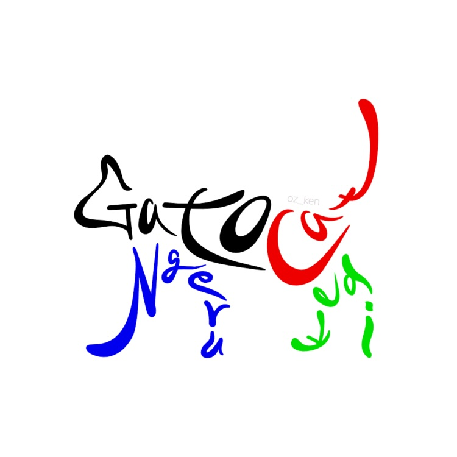
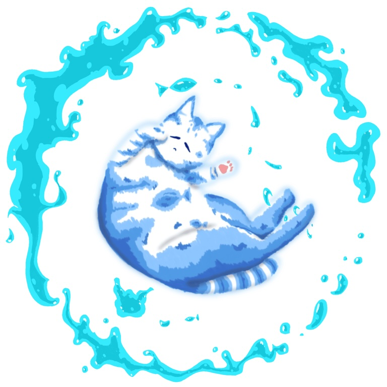
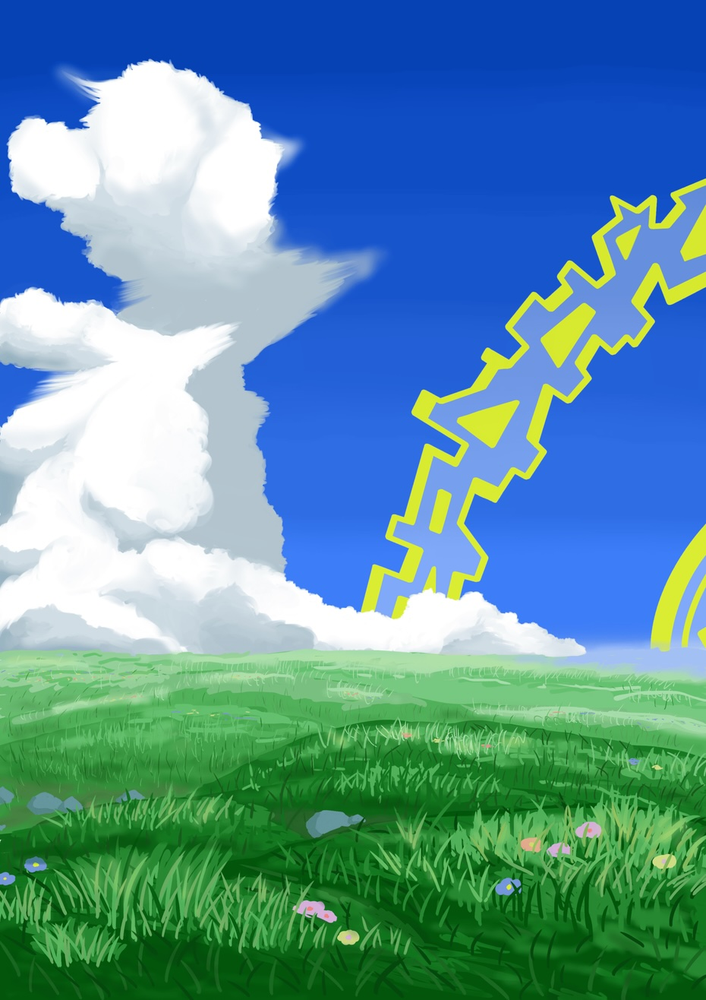

自己紹介

主にProcreateやBlenderを使ってデジタル制作をしていて、競プロも少しやっている大学生。今は、Webや強化学習について勉強中。
今までの作品
水属性の猫

水をモチーフにした猫を描きました。猫の表情を柔らかくし、ポーズに浮遊感を持たせることで水の流体性を表現しました。また、猫の周りの水に動きを持たせ、全体として静的になりすぎないようにしました。
用いたツール
Procreate
ミニルーム
ミニチュアのような空間を作りました。可愛らしい雰囲気にするために、全体的に丸くしてマットな印象にしました。
用いたツール
Blender
雲と草原と

雲と草原という現実にもあるシンプルな構造の中に、空に黄色の模様のある円環を配置し現実と非現実が合わさったようなイラストを描きました。夏の空をイメージして、積乱雲と鮮やかな草原を描きました。
用いたツール
Procreate